Carga de asientos en el Diario General
Al ingresar a la pantalla de Asientos contables verás los asientos ya registrados.
Desde ahí podes ingresar nuevos asientos y también modificar y eliminar los que ya registraste.
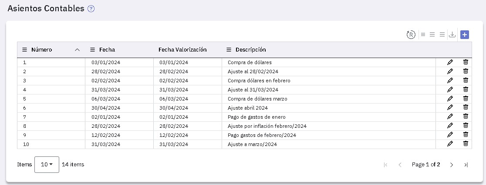
Registrar de asientos
Para agregar un nuevo asiento tenes que presionar y completar la información de las solapas "General" y "Cuentas".
Solapa General
Esta es la primera solapa que se presenta y te ofrece el próximo número de asiento a ingresar, la fecha del día en los campos "Fecha" y "Fecha de valorización" y el tipo "Normal".
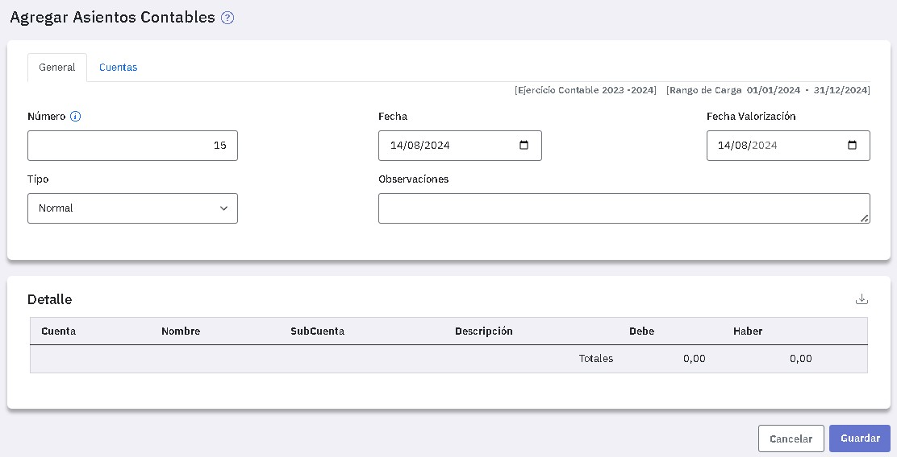
Los datos en esta solapa son:
- Normal
- Ajuste
- Apertura
- Cierre
- Redistribución
Las cuentas que conforman el asiento se ingresan en la solapa "Cuentas" y se muestran en la zona "Detalle" de esta solapa.
Solapa Cuentas
En esta solapa tenés que ingresar, una a una, las cuentas a imputar en el asiento.
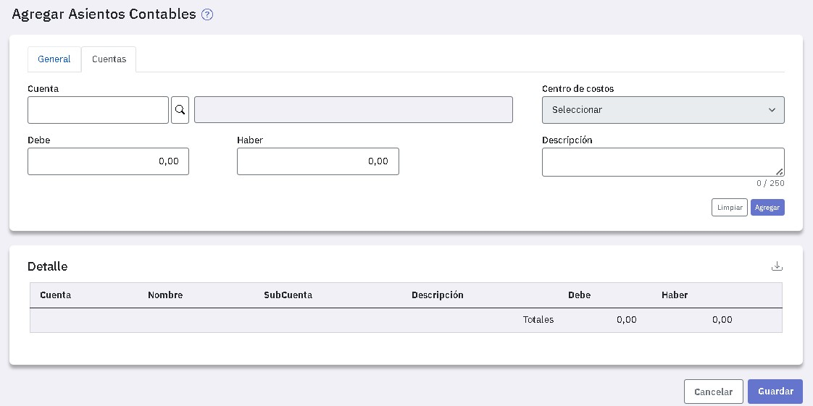
Si la cuenta que informas requiere centro de costos lo seleccionás a la derecha de la misma.
Si la cuenta tiene asociada una tabla de cotizaciones se habilitan los campos "Monto" (importe en la moneda extranjera correspondiente ) y "Cotización".
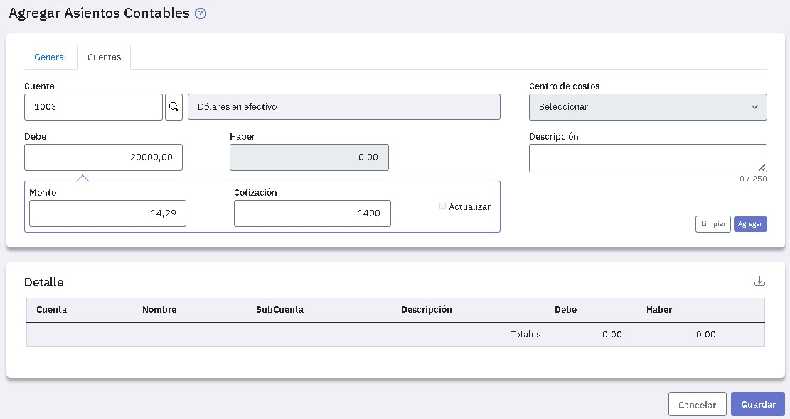
Tené en cuenta que si ingresás el código de una cuenta que indicaste como inmovilizada, se emitirá un aviso y no podrás utilizarla.
Ingresá el importe de la línea (pase) al debe o al haber y si es necesario un texto aclaratorio.
En caso que la cuenta maneje moneda extranjera (tenga asociada una tabla de cotizaciones) y el tipo de asiento no sea "Ajuste", al ingresar el importe, se calcula el "Monto" (importe en la moneda extranjera) en base a la cotización registrada en la tabla correspondiente a dicha moneda.
Dicha cotización corresponde al valor registrado en la tabla de cotizaciones a la fecha de valorización del asiento o a la fecha anterior más cercana a la misma.
Podes corregir los valores calculados por el sistema. Si modificás el monto, se recalcula la cotización y, análogamente, si modificás la cotización se recalcula el monto.
Si la tabla asociada a la cuenta tiene indicado en el campo "Actualización":
- Confirma: Si no existe una cotización para la fecha de valorización del asiento , o si existe pero es diferente a la ingresada, si contestás "Si" se actualiza la tabla con la cotización del pase.
- Si: En este caso se actualiza automáticamente la tabla con la fecha y cotización ingresadas. Si ya existiese una cotización para la fecha de valorización, la cotización registrada en la tabla es reemplazada por la del asiento.
- No: En este caso no se actualiza la tabla.
Una vez que ingresaste los datos presioná "Agregar".
Tu primer línea del asiento está ingresada y de igual manera, deberás ingresar las restantes.
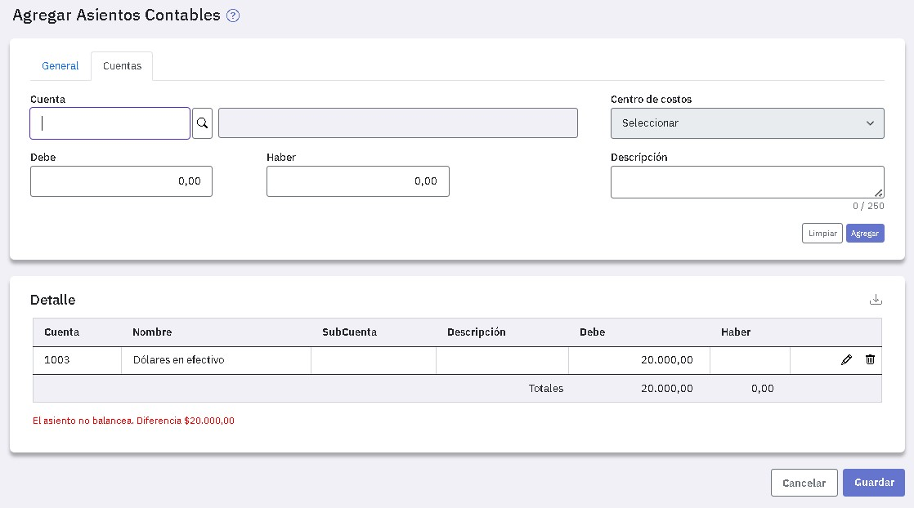
Observá que EasySoft controla que el asiento balancee y no podrás guardarlo hasta tanto el debe y el haber coincidan.
Al completar el asiento ya estás en condiciones de guardarlo.
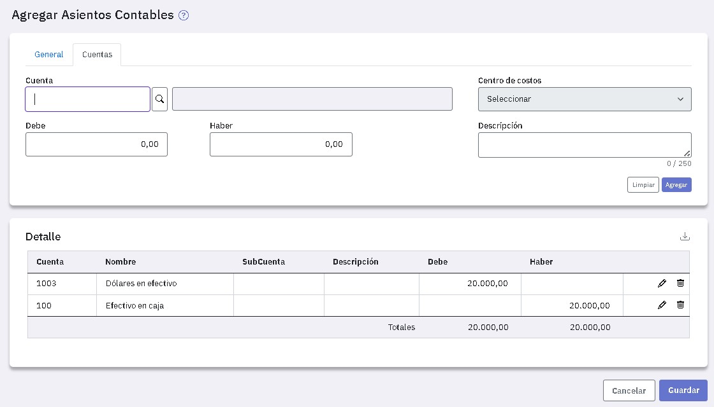
En caso que el número de asiento que estás ingresando ya exista, verás un aviso que te lo informa y te sugiere el número siguiente al último registrado.
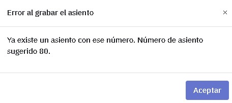
Modificación y eliminación de asientos
Tanto para modificar como para eliminar un asiento ubicate sobre la línea del mismo. Para eliminarlo presioná  y para modificarlo en la línea del mismo y presioná .
y para modificarlo en la línea del mismo y presioná .
Al modificar un asiento vas a poder agregar lineas y también modificar y eliminar algunas de las existentes.
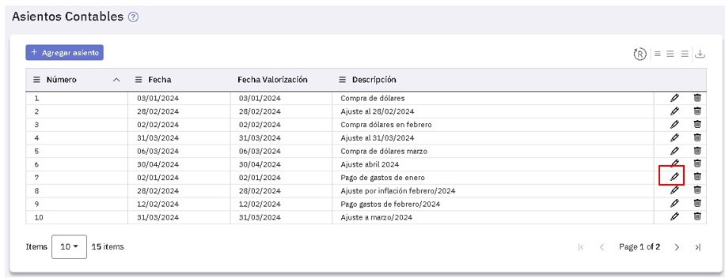
Al editar un asiento, en la siguiente ventana podes modificar el encabezado del asiento (en la solapa General) o bien, en la solapa Cuentas, agregar una nueva.
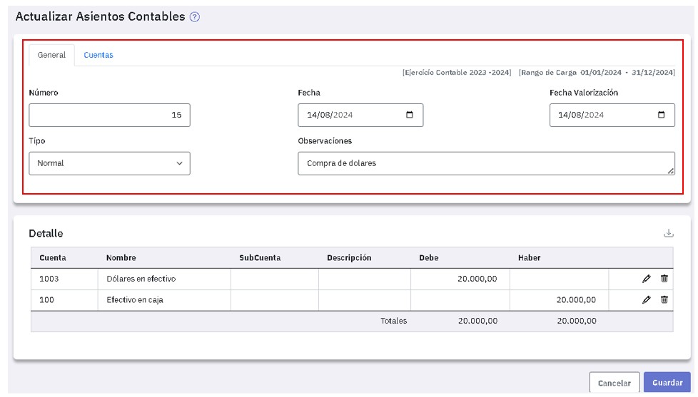
Si queres modificar una línea del asiento, ubicate en ella y presioná , los datos se copian a la zona superior y podes modificarlos libremente. Para grabar la línea modificada presioná "Reemplazar".
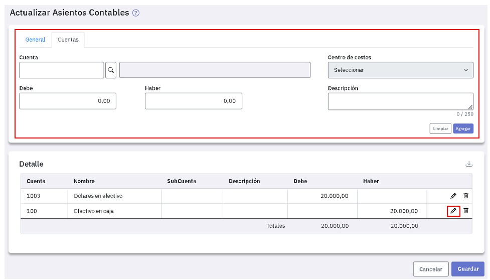
En la pantalla donde ingresas asientos , mediante el botón "Exportar a Excel" , que está disponible arriba a la derecha, podes listar todos los asientos registrados; en una hoja verás los asientos y en otra sus respectivos detalles.
, que está disponible arriba a la derecha, podes listar todos los asientos registrados; en una hoja verás los asientos y en otra sus respectivos detalles.
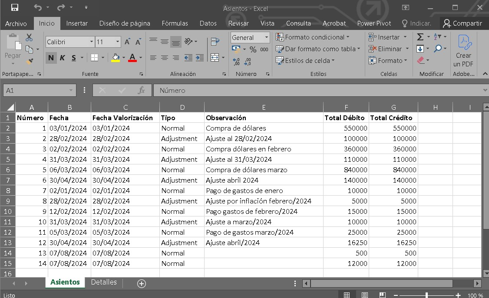
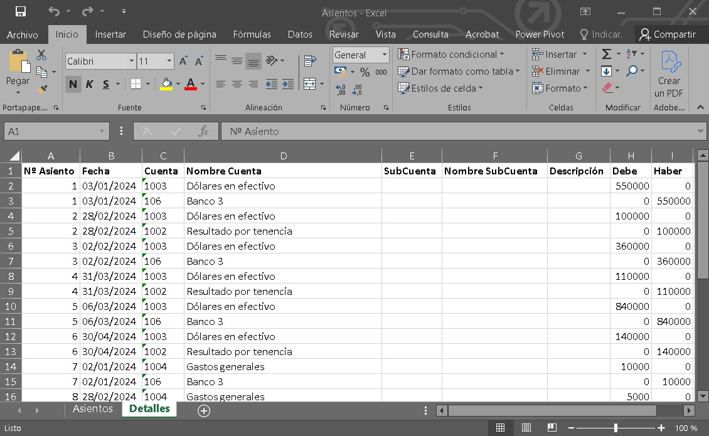
Asimismo, cuando ingresas a modificar un asiento, desde la solapa "General" o desde "Cuentas", podés exportarlo a una planilla de Excel. Acá te mostramos un ejemplo: